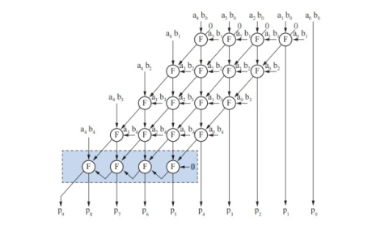
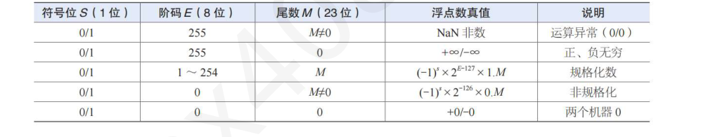

第 31 题
以下关于布斯补码一位乘法算法要点的描述中，错误的是（ ）
- A．符号位和数值位一起参加运算，无需专门的符号生成部件
- B．通过循环执行“加/减”和“移位”操作得到乘积
- C．由乘数最低两位决定对部分积和被乘数进行何种运算
- D．移位时，将进位位、部分积和乘积部分一起进行算术右移
答案与解析
答案：D
关于布斯补码一位乘法算法要点的描述中，错误的是D 选项中的说法：“移位时，将进位位、部分积和乘积部分一起进行算术右移”。因为补码一位乘法的算法中，并没有专门的进位位，而符号位作为部分积的一部分进行处理。
第 32 题
以下关于乘法运算部件的叙述中，错误的是（ ）
- A．补码乘法部件可用于带符号整数的乘法运算
- B．原码乘法部件可用于浮点数中尾数相乘运算
- C．快速阵列乘法器中的基本部件包含移位器
- D．两位乘法运算比一位乘法运算速度约快一倍
答案与解析
答案：C
A 正确，补码系统是计算机中带符号整数的主流表示方式，使用补码乘法器可以正确处理正负数相乘；B 正确，浮点数尾数通常用原码表示，如IEEE754，尾数相乘可用原码乘法部件进行运算。C 错误，快速阵列乘法器中没有移位器，而是并行计算部分积，通过大量一位全加器构成全加器阵列累加求和，无需移位，如右图所示。时间复杂度总结：一位booth 乘法：𝑂𝑛2阵列乘法器：𝑂𝑛两位booth 乘法：位积个数减少一半n/2，所以加法和移位次数都减少至1/2，比booth 一位乘法快1 倍。

第 33 题
对于两个n 位无符号整数除法运算，以下关于不恢复余数算法要点的描述中，错误的是（ ）
- A．起始时被除数在高位扩展n 位0，以将其扩展为2n 位无符号整数
- B．为判断中间余数的正/负，需在余数寄存器的最高位前增加一位符号位
- C．至少需n+1 次循环执行“加/减”和“左移”操作才能得到“位商”
- D．运算结果一定不会发生溢出，故无需通过得到最高位商来判断溢出
答案与解析
答案：C
对于两个"位无符号整数除法运算，最大的商为111…11/000…01=111…11，显然，运算结果没有产生溢出。因此，两个n 位无符号整数除法运算肯定不会溢出，无需通过得到最高位商(第n 位商𝑞𝑛)来判断溢出，也即只要有"n 次循环执行“加/减”和“左移”操作，就能得到第n-1~0位的n 位商(𝑞𝑛−1~𝑞0)。因此，选项C 的说法是错误的。
第 34 题
加减交替除法又称为不恢复余数法，因此（ ）。
- A．不存在恢复余数的操作
- B．当某一步运算不够减时，做恢复余数的操作
- C．仅当最后一步余数为负时，做恢复余数的操作
- D．当某一步余数为负时，做恢复余数的操作
答案与解析
答案：C
在用原码加、减交替法运算时，商的符号位是由除数和被除数的符号位异或来决定的，商的数值是由除数、被除数的绝对值通过加、减交替运算得的。由于除数、被除数取的都是绝对值，那么最终的余数应是正数。如果最后一步余数为负、则应将该余数加上除数，将余数恢复为正数，称为恢复余数，C正确。
第 35 题
已知无符号整数X = 10101010B，Y = 01010101B，若进行X - Y 运算（采用无符号整数减法规则），结果是（）。
- A．01010101B
- B．01010111B
- C．11010101B
- D．11010111B
答案与解析
答案：A
无符号整数减法可先其都看作补码然后再转换为补码减法，𝑋−𝑌= 𝑋+ 𝑌̄ + 1 = 𝑋+−𝑌补，-Y的补码为10101011B，故X - Y = 10101010B + 10101011B = 01010101B，最高位进位舍去，结果为01010101B，当然也可以直接用无符号整数列竖式做减法，只不过转换为补码会更加通用，A 正确。
第 36 题
对8 位补码整数10110111 进行算术右移1 位后的结果是（ ）。
- A．11011010
- B．11011011
- C．10110111
- D．01011011
答案与解析
答案：B
算术右移补符号位，原符号位为1，移位后高位补1，结果为11011011，B正确。
第 37 题
下列哪一个选项中的两补码运算会发生溢出？
- A．60H+0BH
- B．E6H+38H
- C．C5H+BBH
- D．3BH+45H
答案与解析
答案：D
对于补码运算S=A+B，有如下几种判断方式方法一：OF=𝐴𝑠𝐵𝑠𝑆𝑠ഥ+ 𝐴𝑠𝐵𝑠തതതത𝑆𝑠ത方法二：OF=𝐶𝑛⊕𝐶𝑛−1，数值最高位进位和符号位进位异或方法三：采用双符号位 •SIS2 =00：表示结果为正数，无滥出。 SIS2 =01：表不结果正溢出。 • • SIS2 = 10：表示结果负溢出。 •SIS2 = 11：表示结果为负数，无溢出。溢出逻辑判断表达式为V=𝑆1 ⊕𝑆2，若V=0，表示无溢出。 • 无论是带符号数还是无符号数，都有两种解题思路。方法一：进行机器运算，如选项D，3BH+45H，最高位进位是0，次高位进位是1，所以OF=𝐶𝑛⊕𝐶𝑛−1= 1。发生溢出。如果是做减法，𝑋−𝑌= 𝑋+ 𝑌ഥ+ 1，在判断标志位生成，用公式计算。机器不区分带符号数和无符号数，只看生成的进位信息，按公式计算出CF和OF。无论带符号数还是无符号数都是一样的运算规则。方法二：用真值判断。还是以D为例子，3BH补码的真值是59，45H的补码真值是69， 59+69=128，而8位补码的范围是［-128, 127］，128超出了范围，所以溢出。此法要求对补码转真值比较熟练，以及n位补码或者无符号数的范围比较熟悉。综上，D正确。
第 38 题
32 位补码加法7FFFFFFFH + 1 的结果对应的标志位（SF，OF，ZF）是（ ）。
- A．0, 1, 0
- B．1, 1, 0
- C．0, 0, 1
- D．1, 0, 0
答案与解析
答案：B
结果为80000000H，溢出（正数加1变负数），故SF=1，OF=1，ZF=0，B正确。
第 39 题
某计算机中有一个8位加法器，带符号整数x和y的机器数用补码表示，［𝑥]补= 𝐹5𝐻，［𝑦]补= 7𝐸𝐻，如果在该加法器中计算x-y，则加法器的低位进位输入信息和运算后的溢出标志OF 分别是（ ）。
- A．1,1
- B．1,0
- C．0,1
- D．0,0
答案与解析
答案：A
对于补码减法运算，控制端Sub为1，故低位进位输入位=Sub=1。［𝑥]补= 11110101，［𝑦]补= 01111110，−𝑦补= 10000001 + 1，［𝑥]补−𝑦补=𝑥补＋−𝑦补= 11110101 + 10000010 = 01110111，进位丢掉，参与运算的两个数均为1，结果的符号位为0，故溢出标志OF为1，A正确。
第 40 题
𝑥补= 𝐸𝐶𝐷𝐹0000𝐻，𝑦补= 80000000𝐻，那么计算机在计算x-y 的结果对应的OF 和CF 为 （）
- A．OF = 1，CF = 1
- B．OF = 0，CF = 0
- C．OF = 0，CF = 1
- D．OF = 1，CF = 0
答案与解析
答案：B
尽管本题给出的是补码，但是在计算CF 时，可以把x 和y 当无符号数看，容易知道机器数x>y，所以对于无符号数，x-y>0，无借位所以CF=0。在计算OF 时，可以用异或运算来确定，𝑂𝐹= 𝐶𝑛⊕𝐶𝑛−1 ，注意本题的坑其实就在于确定OF：如果用𝑥补−𝑦补=𝑥补+−𝑦补= ¯6𝐶𝐷𝐹0000, 𝐶𝑛= 1, 𝐶𝑛−1= 0, 𝑂𝐹= 𝐶𝑛⊕𝐶𝑛−1= 1 ⊕0 = 1 ，这就掉入𝐸𝐶𝐷𝐹0000𝐻+ 80000000𝐻=1了陷阱：计算机并不是直接计算𝑥补+−𝑦补，而是计算𝑥补+𝑦̄+ 𝑠𝑢𝑏= 𝐸𝐶𝐷𝐹0000𝐻+ ¯6𝐶𝐷𝐹0000，这个过程𝐶𝑛= 1, 𝐶𝑛−1= 1, 𝑂𝐹= 𝐶𝑛⊕𝐶𝑛−1= 1 ⊕1 = 0，才是符合7𝐹𝐹𝐹𝐹𝐹𝐹𝐹𝐻+ 1 =1答案的。
第 41 题
某CPU 中，若进位/借位标志位CF、零标志位ZF、符号标志位SF（0 表示正）、溢出标志为OF，A、B 为无符号整数，则判定A 小于等于B 的条件是（ ）。
- A．SF =1
- B．SF + ZF =1
- C．CF = 1
- D．CF + ZF =1
答案与解析
答案：D
无符号数比较大小，通过两个操作数相减得到，若A=B，则CF = 0，ZF=1，若A小于B，A - B 有借位，CF=1. CF=1，ZF=0。因此，判定A小于等于B的条件是CF+ZF=1，D正确。补充：在无符号数情况下，各情况判定条件F 如下：等于：相减后结果为0，即𝐹= 𝑍𝐹 • 大于：没有借位且相减后不为0，即𝐹= 𝐶𝐹̄ ⋅𝑍𝐹̄ = 𝐶𝐹+ 𝑍𝐹 • 小于：有借位且相减后不为0，即𝐹= 𝐶𝐹·𝑍𝐹 • 大于等于：没有借位或相减后结果为0，即𝐹= 𝐶𝐹̄ + 𝑍𝐹 • 小于等于：有借位或相减后结果为0，即𝐹= 𝐶𝐹+ 𝑍𝐹 • 在带符号整数情况下，各情况判定条件F 如下：等于：相减后结果为0，即𝐹= 𝑍𝐹 • 大于：结果不为0，且不溢出时为正，溢出时为负。即𝐹= 𝑍𝐹̄ ⋅𝑆𝐹⊕𝑂𝐹 • 小于：结果不为0，且不溢出时为负，溢出时为正。即𝐹= 𝑍𝐹̄ ⋅𝑆𝐹⊕𝑂𝐹 • 大于等于：结果为0，或者不溢出时为正，溢出时为负。即𝐹= 𝑍𝐹+𝑆𝐹⊕𝑂𝐹 • 小于等于：结果为0，或者不溢出时为负，溢出时为正。即𝐹= 𝑍𝐹+𝑆𝐹⊕𝑂𝐹 •
第 42 题
若A、B 是带符号数，下列能作为𝐴≤𝐵的判定逻辑表达式的是（高电平有效）（ ）
- A．𝑂𝐹⊕𝑍𝐹+ 𝑆𝐹
- B．𝑂𝐹⊕𝑆𝐹+ 𝑍𝐹
- C．𝑍𝐹⊕𝑆𝐹+ 𝑂𝐹
- D．𝑂𝐹+ 𝑆𝐹⊕𝑍𝐹
答案与解析
答案：B
若𝐴≤𝐵情况1：𝐴< 𝐵，即𝐴−𝐵< 0。 • 减法无溢出𝑂𝐹= 0。𝑆𝐹= 1代表实际结果为负，此时𝑍𝐹= 0减法有溢出𝑂𝐹= 1，那么负数溢出后一定为正或者0，补码中负数溢出不可能是0，比如8位补码，要溢出到0，必须是-128-128=-256，但是没有正数128。所以𝑆𝐹= 0，𝑍𝐹= 0情况2：𝐴== 𝐵，即𝐴−𝐵== 0。此时𝑂𝐹= 0，𝑆𝐹= 0，𝑍𝐹= 1 • 综上，一共三种情况（前两种是A<B，第三种是A==B） 𝑂𝐹= 0, 𝑆𝐹= 1, 𝑍𝐹= 0（无溢出且A-B 结果为负） • 𝑂𝐹= 1, 𝑆𝐹= 0, 𝑍𝐹= 0（负-正=正，溢出且溢出后为正） • 𝑂𝐹= 0, 𝑆𝐹= 0, 𝑍𝐹= 1（无溢出且结果为0） • 因为在计算机中，ZF=1 时，表示结果全0（0补）因为ZF=1，此时符号SF必须是0，又根据情况1的第二种子情况分析，OF也必须是0。所以ZF=1在计算机中就代表了𝑍𝐹= 1，𝑂𝐹= 0，𝑆𝐹= 0，而前两种情况概括了ZF=0时的情况，用𝑂𝐹⊕ 𝑆𝐹表示，因此答案选B。 A、C、D 选项错误举例：A-B=正-负=负，A>B，此时结果𝑆𝐹= 1, 𝑂𝐹= 1, 𝑍𝐹= 0，但A、C、D 选项结算结果都是1，不能作为判断条件，不符合题意。
第 43 题
若x=103，y=-25，则下列表达式采用8 位定点补码运算实现时，会发生溢出的是（ ）。
- A．x+y
- B．-x+y
- C．x-y
- D．-x-y
答案与解析
答案：C
8 位补码的范围：[-128, 127]，x-y = 128 不能用8 位补码表示出来，即发生溢出。判断溢出一般推荐两种方法。 【方法一】用原码/补码的范围来判断。 •应用场景：①真值②给出的二进制机器数好转真值，如：FFFFH③乘除法无脑用真值 • 步骤：先写出n 位原码/补码的范围，比如这题是判断补码溢出（OF），补码范围就是−2𝑛−12𝑛−1−1用真值运算得出结果（十进制加减乘除）如果是给出机器数，那么原码运算或者判断CF，就把机器数转原码真值进行运算如果是给出机器数，那么补码运算或者判断OF，就把机器数转补码真值进行运算看结果是否超出表示范围如果是补码运算或者判断OF，看是否超过补码范围，如这题很容易知道C 不在范围内如果是原码运算或者判断CF，看是否超过原码范围 【方法二】机器数运算通过逻辑运算判断。应用场景：给出的二进制机器数不好转真值，如：2345H • • 步骤：加法：x + y 直接进行二进制竖式运算减法：x −y = x + ȳ + 1判断：无符号数溢出：CF = Cn ⊕Cin= Cn ⊕Sub带符号数溢出：OF = Cn ⊕Cn−1
第 44 题
已按勘误修正
在补码加法运算时，产生溢出的情况是（ ）。 I．两个操作数的符号位相同，运算时采用单符号位，结果的符号位与操作数相同II．两个操作数的符号位相同，运算时采用单符号位，结果的符号位与操作数不同III．运算时采用单符号位，结果的符号位和最高数位进位情况相反IV．运算时采用单符号位，结果的符号位和最高数位同时产生进位V．运算时采用双符号位，运算结果的两个符号位相同VI．运算时采用双符号位，运算结果的两个符号位不同
- A．I, III, V
- B．II, IV, VI
- C．II, III, VI
- D．I, III, VI
答案与解析
答案：C
常用的溢出判断方法主要有三种：采用一个符号位、采用进位位和双符号位。采用一个符号位的溢出条件为，结果的符号位与操作数符号位不同。采用进位位判断溢出的条件为：结果的符号位和最高数位进位情况相反。采用双符号位的溢出条件：运算结果的两个符号位不同，故C正确。
勘误：题目中选项III已按勘误修正，已核对。
第 45 题
某浮点数阶码用4 位移码表示，尾数用8 位补码表示（含符号位），规格化数的正的尾数的范围是（）。
- A．0 1 −2−7
- B．2−11 −2−8
- C．2−11 −2−7
- D．0 1 −2−8
答案与解析
答案：C
补码规格化尾数最高位为符号位，要求数值部分绝对值≥0.5。当尾数为正数时，补码与原码相同，最小的规格化正数尾数是0.100⋯00（8位，含符号位），即2−1；最大的规格化正数尾数是0.111⋯11，其值为。故C正确。注意：规格化数的负的尾数的范围是−1 −1/2。负数中虽然-1/2 绝对值大于等于1/2，但是为了便于规格化判断电路设计（符号位和数值位最高位异或），不保留1.100...，即-1/2。如果是模r 原码或者补码表示尾数，尾数部分数值绝对值≥1/r（如模4 原码就是1/4，需要满足数值位最高两位不能全0）
第 46 题
设机器字长为16 位，表示浮点数时，阶符占1 位，阶码数值部分为5 位，数符占1 位，浮点数的阶码和数值部分都用补码表示，则可以表示的最大值为（）。
- A．231×1 −2−9
- B．−231×1 −2−9
- C．232×1 −2−9
- D．−232×1 −2−9
答案与解析
答案：A
尾数的数值位数为16-1-5-1=9位，尾数一共为10位，用补码表示，其可以表示的最大小数为1 −2−9。阶码一共6位，可以表示的最大值为25−1 = 31。故浮点数的最大值为231×1 −2−9，A正确。
第 47 题
设浮点数阶码的基数是8，尾数用补码表示，下列浮点数尾数中规格化数是（ ）。
- A．11.111000
- B．00.000111
- C．11.101010
- D．11.111101
答案与解析
答案：C
当阶码是以8为底时，尾数M的数值绝对值大小≥1/8。即：1/8<=M<1或- 1<=M<=-1/8，就是规格化数（补码时）。所以判断规格化时，只要尾数的数值部分的最高3 位中有一位与符号位不同即可。
第 48 题
某浮点数阶码用4 位移码表示，尾数用8 位补码表示（含符号位），若浮点数机器数为011011011000B，则其对应的真值为（ ）。
- A．-0.101B× 22
- B．-0.101B× 2−2
- C．-0.0101B× 2−2
- D．-0.0101B× 22
答案与解析
答案：C
。【解析】阶码0110B，移码表示，其真值为0110 - 1000 =-2（移码真值等于移码减去偏移量2𝑛−1，n为阶码位数，注意此处不是IEEE754标准，不要误把偏移量减一）。尾数11010000B，补码且规格化（补码尾数规格化形式：符号位与最高数值位相反），其真值为-0.0101B。所以浮点数真值为-0.0101B× 2−2，C正确。
第 49 题
IEEE 754 标准浮点数表示中，符号位为1，阶码全为1，尾数全为0 ，该浮点数表示（ ）。
- A．正无穷大
- B．负无穷大
- C．非规格化数
- D．规格化数
答案与解析
答案：B
在IEEE 754标准浮点数表示中，当阶码全为1，尾数全为0时，若符号位为0，则表示正无穷大；若符号位为1，则表示负无穷大。本题符号位为1，所以表示负无穷大，B正确。
第 50 题
IEEE 754 标准浮点数表示中，符号位为0，阶码全为1，尾数不全为0 ，该浮点数表示（ ）。
- A．无穷大
- B．非数
- C．非规格化数
- D．规格化数
答案与解析
答案：B
在IEEE 754标准浮点数表示中，当阶码全为1，尾数不全为0时，表示非数NaN，即没有定义的数，B正确。阶码0<E<255，表示规格化数，格式：−1𝑠×1. 𝑓× 2𝐸−127 • • 阶码全0，尾数全0，表示±0；阶码全0，尾数不全为0，非规格化数，−1𝑠×0. 𝑓× 2−126 • •阶码全1，尾数全0，表示±∞； • 阶码全1，尾数不全为0，非数（NaN），尾数最高位为1，不发异常通知，尾数最高位为0，发异常通知（低电平有效），后22 位表示异常类型。

第 51 题
关于浮点数表示和运算，下列说法正确的是（ ）。
- A．浮点数的表示范围仅取决于阶码的位数
- B．浮点数运算时，对阶操作可能会导致尾数的精度损失
- C．规格化的浮点数补码表示的尾数数值位最高位一定为1
- D．浮点数的加减法运算不需要考虑符号位
答案与解析
答案：B
浮点数运算对阶时，小阶的尾数右移，可能会丢失低位数据，导致精度损失，B正确；浮点数的表示范围取决于阶码和尾数的位数，A错误；规格化的浮点数补码表示的负数尾数数值最高位为0，C错误；浮点数加减法运算必须考虑符号位，因为符号决定操作（如加或减）、结果符号以及运算过程，D错误。
第 52 题
IEEE 754 双精度浮点数的指数偏移值是（ ）。
- A．127
- B．128
- C．1023
- D．1024
答案与解析
答案：C
IEEE 754双精度浮点数使用11位指数，其偏移值为210−1 = 1023，C正确。用这个题目提醒大家记一下double 的编码格式，尾数部分是64-11-1=52 位。 short s = -0x8000即。（注意通常认为c语言中输入0x8000就是单纯的按照十六进制数去解析，而不是补码，只不过若大小超出short范围则会发生溢出，导致看上去和补码的形式相同，实际使用中怎么顺手怎么用就行）转换为float时精度表示足够，范围表示足够，故f = -32768，最后float转换为unsigned int，按数值转换，-32768符号拓展的32位整形补码为FFFF8000H，用unsigned int解释即为232−215，C正确。
第 53 题
IEEE 754 标准中，单精度浮点数所能表示的最大非规格化数是（ ）
- A．2−126×2 −2−23
- B．2−127×2 −2−23
- C．2−126×1 −2−23
- D．2−127×1 −2−23
答案与解析
答案：C
在IEEE 754标准中，单精度浮点数的非规格化数是指阶码为零的数，用于表示非常小的浮点数。这种数的阶码部分不存储隐含的“1”，与规格化数不同。单精度浮点数总共占32位，其中1位符号位，8位阶码位，23位尾数位。对于非规格化数： • 阶码部分全为0（对应的是一个偏移量为-126的实际指数）。 •尾数部分不存隐含的“1”，因此实际尾数为0.f。最大非规格化数发生在尾数部分全为1的情况下，即：2−126×1 −2−23这是可以表示的最大的非规格化浮点数。思考：最小非规格化正数是多少? 在IEEE 754标准中，单精度浮点数的最小非规格化数是指阶码全为0（表示指数为-126）的情况下，尾数部分只有最低位为1，其它位为0。非规格化数的表示形式为：非规格化数= ( −1)符号位× 2−126× 0. 尾数最小非规格化数对应的是尾数部分全为0，只有最低位为1：最小非规格化数= 1 × 2−126× 2−23因此，最小的非规格化数为：最小非规格化数= 2−126× 2−23= 2−149
第 54 题
IEEE 754 标准中，单精度浮点数所能表示的最大值是（ ）
- A．2127×2 −2−23
- B．2128×2 −2−23
- C．2127
- D．2128
答案与解析
答案：A
阶码0<E<255，表示规格化数，格式：−1𝑠×1. 𝑓× 2𝐸−127。阶数最大值是254-127=127，尾数部分能表示的最大值是2 −2−23，故答案选A。
第 55 题
IEEE754 单精度浮点数float 的非规格化最小负数是（ ）
- A．2−150−2−125
- B．2−149−2−126
- C．2−149−2−125
- D．−2−149
答案与解析
答案：B
规格化数的阶码机器数范围[1, 254]，减去偏置127，阶码真值范围[-126, 127]。且规格化数的表示格式是1. 𝑓× 2𝐸−127，𝑓∈0 1 −2−23 ，所以规格化数范围是： 2−1262 −2−23∗2127，即2−1262128−2104，负数是镜像区间−2128−2104−2−126非规格化数的阶码是全0，尾数f 不全为0，表示格式为0. 𝑓× 2−126，𝑓∈0 1 −2−23，所以非规划数的范围是：2−23∗2−1261 −2−23∗2−126，即2−1492−126−2−149，负数是镜像区间 −2−126−2−149−2−149。题目问的非规划的最小负数，因此答案选B。
第 56 题
IEEE 754 单精度浮点格式中，非规格化正数的个数是（ ）个。
- A．223−1
- B．223
- C．224−1
- D．224
答案与解析
答案：A
非规格化数条件：阶码全0 +尾数非全0，尾数有23位，隐含符号位固定为0，故共223种可能，但需排除全0（全0表示0），故数量为223−1，A正确。
第 57 题
在规格化浮点数表示中，保持其他方面不变将阶码部分的移码表示改为补码表示将会使数的表示范围（）。
- A．增大
- B．减少
- C．不变
- D．以上都不对
答案与解析
答案：C
因为将阶码部分的移码表示改为补码表示，并不会使数的表示范围发生变化，只会使阶码的表示形式发生变化，C正确。
第 58 题
下列说法正确的是（ ）。
- A．浮点数的正负由阶码的正负符号决定
- B．在CPU 中执行算术运算和逻辑运算，都是按位进行且各位之间是独立无关的
- C．全加器和半加器的区别在于是否考虑低位向高位进位。
- D．加法器是构成运算器的基本部件，为提高运算速度，运算器一般都采用串行加法器
答案与解析
答案：C
浮点数的正负由尾数的正负符号决定，阶码的正负符号只影响数的绝对值的大小，A错误；在并行加法器中，高位的进位依赖于低位，B错误。为提高运算速度，运算器一般都采用并行加法器，D错误。
第 59 题
下列说法正确的是（ ）。
- A．一个正数的补码和这个数的原码表示一样，而正数的反码就不是该数的原码表示，而是原码各位数取反。
- B．表示定点数时，若要求数值0 在计算机中惟一地表示为全0，应使用反码表示
- C．将补码的符号位改用多位来表示，就变成变形补码，一个用双符号位表示的变形补码01.1010是正数。
- D．浮点数的取值范围由阶码的位数决定，而浮点数的精度由尾数的位数决定
答案与解析
答案：D
一个正数的补码和反码均和这个数的原码表示一样，A错误。表示定点数时，若要求数值0在计算机中唯一地表示全0，应使用补码表示，B错误。 01.1010是一个正溢出数，C错误。
第 60 题
下列说法错误的是（ ）。
- A．所有进位计数制，其整数部分最低位位权都是1
- B．某R 进位计数制，其左边1 位的权是其相邻的右边1 位的权的R 倍
- C．在计算机中，所表示的数有时会发生溢出，其根本原因是计算机的字长有限
- D．浮点数通常采用规格化数来表示，规格化数即指其尾数的第1 位应为0 的浮点数
答案与解析
答案：D
原码规格化后，正数为01x...x的形式，负数为1.1x...x的形式。补码规格化后，正数为0.1x..x的形式，负数为1.0x...x的形式，D错误。